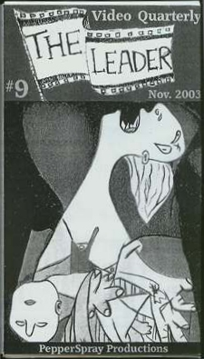

|
JuneBot: Weapons
Of Mass DistrACTION Project
Wednesday, June 2nd, 2004 at 7.30 pm
Center on Contemporary
Art, Seattle, WA
|
Speakers and exhibiting artists:
|
Joshua Brown, “Electric Babysitters and
the Cultural Reclamation Project”: self-trained
artist, creative director of the Artistic Media Group (http://www.artisticmedia.biz/)
and VP of Northwest Cyber Artists Productions, Joshua discusses
how and why he made these works, describing the effect of
presenting familiar technologies from a skewed perspective
(Electric Babysitters), and using large-scale graphical
reproduction equipment not typically used for non-commercial
purposes to create the Cultural Reclamation Project. He
is “working hard to realize a better world through
art by creating culture responsibly: I believe that art
CAN save the world”.
Larry Nielson, “How I Became A Documentary
Filmmaker In 12 Easy Months”: A professional still
photographer and car artist (“Cartist”) for many
years, Larry Neilson had hardly held a video camera in his
hands until January 2003, when he began a course in digital
video for the Web. A few weeks later he found himself in
the swirl of history in the making as he filmed the record-setting
February 15 peace march through downtown Seattle, an event
which changed his life. Amazed by the power of the medium
- a film made on his own desktop computer at home - he has
been exploring the theme and refining his skills ever since.
He will share his results, anecdotes of the journey, and
thoughts on digital video's relevance to grass-roots independent
media, showing 3 short Quicktime movies about the peace
movement and the need for peace in our lives while also
discussing the technicalities of digital filmmaking and
publishing to the web. http://www.cityofart.net/sample.html
tells you more.
|
Randy Rowland, “The Power
In The Image: A Short Course In Stopping Those Who
Will Stop At Nothing”: Anybody who dreams
of a better future for our planet than the Grim Reapers
Who Run Things has to come up against the question
"How do you stop those who will stop at nothing?"
Guerilla artists and journalists have a plan, and
veteran protester Randy Rowland, of the PepperSpray
Productions Indymedia video collective, will tell
us what that is. Randy was one of the “Presidio
27” anti-Vietnam War mutineers convicted of mutiny
in 1968. In 1989, he was the “veteran who napalmed
1,000 US flags” the moment US flag-burning became
illegal, the resulting case prompting the Supreme
Court’s overturning of that law. Ever since,
he has been curating and creating politically aware
art-focused projects from the Labor Films Screening
Series to his weekly public access TV show, Indymedia
Presents. Read about the latest PepperSpray Video
Quarterly, The Leader, at http://www.thinksmall.org/pepperspray/.
|
 |
Mark Taylor-Canfield, “Media and Culture
Jamming”: Local artist, activist, composer and
musician Mark Taylor-Canfield will present an outline of
the concepts of “media” and “culture jamming”
using examples of his work in sound art, broadcasting, performance
art, music and video. He will share simple techniques which
allow artists to use technology to create dramatic contextual
and conceptual juxtapositions in the areas of politics and
culture.
|
Additional exhibiting artists:
|
Paul Luksch: Who among us has not had the urge to
hurl a projectile towards a Cathode Ray Tube? When Paul’s
dreams collide with his realities, ART is often the cheapest
and most effective therapy.
* dj bios+a+ic will spin cds featuring local and
international sound sculptors and sonic architects. Bios+a+ic
is the solo alias of Wesley Davis of entropic advance (http://www.entropicadvance.com/).
Wesley fuses ambient, noise, experimental, glitch and texture
to create a lucid and encompassing musical environment.
Randy Rowland is a member of PepperSpray Productions,
an Indymedia video collective in Seattle. He is producer
of "Indymedia Presents," a weekly public access
show. Fridays at 9:30pm, Seattle (Channel 77) and King County
(Channel 29) the show runs on on Bainbridge Island alternating
nights at 11:30pm. The show is also aired in St. Paul, MN.
Rowland curates the on-going Labor Films Screening Series,
sponsored by the King County Laobr Council, the Harry Bridges
Center For Labor Studies, IBEW Local 46, and PepperSpray
Productions. His video work has appeared numerous times
on Free Speech TV, the people¹s national satelite channel
(DISH network), and on Amy Goodman¹s "Democracy
Now." Rowland¹s articles have been published on
more than one occasion in Z Magazine. During the run-up
to Gulf War I, Rowland created the "Real Hero¹s
Poster Project," producing scores of posters, each
depicting a military resister to the Gulf War. The posters
informally went up in cities around the country, with formal
installations of the entire project in a half dozen cities.
He also organized "Gut Reaction," a national anti-war
art show which hung for a month in the OK Hotel. In 1989,
Rowland was the "veteran who napalmed 1,000 US flags"
the moment it became illegal to burn the US flag. The case
which resulted from that action prompted the Supreme Court
to overturn Papa Bush¹s flag burning law. In 1968,
Rowland, along with other soldiers, was convicted of mutiny,
in a highly publicized political trial where the anti Vietnam
War mutineers became known as "The Presidio 27."
http://www.thinksmall.org/pepperspray/
Mark Taylor-Canfield is a well-known figure in the
Seattle area. Sometimes controversial, he has always managed
to stir up the political and arts scene and over the years
he has developed a reputation for challenging the status
quo. His arrest onstage during his own performance at Seattle
Symphony’s Benaroya Hall is the stuff of legend and
has inspired performance art pieces, cartoons and numerous
articles and essays. Mark had planned to protest the state
of the arts in Seattle and the lack of public funding, specifically
targeting the Mayor’s Arts Task Force which never really
accomplished anything to help local artists. In fact, Seattle
Mayor Paul Schell had vetoed or shelved all of the group’s
proposals. In the ensuing controversy, Taylor-Canfield was
arrested before he could actually perform the world premier
of his solo piano piece, “Catharsis”, because
of slanderous rumors that he planned to destroy the Symphony’s
expensive concert grand piano. He had denied the rumors
all along, but someone decided he was just a little too
political and the rest is history. Of course, no charges
were ever filed since he broke no laws. All he did was step
onto the stage. The film of his arrest, by the way, was
featured on local news programs and the Seattle Weekly headlined
their story, “Composer Nabbed, Piano Saved”.
Mark Taylor-Canfield also hosts programs on the Seattle
Independent Media Network’s Radio X. As an activist,
Mark has been responsible for helping to organize large
civil rights and anti-globalization demonstrations in the
Seattle area. He is a founding member of the public interest
civil rights group the Committee For Government Accountability
and the multi-media arts group the Sonicabal. His work on
civil rights issues has been recognized by community activists
and by city officials. He has testified at many public hearings,
including a statement before the Federal Communications
Commission. He is co-author of two reports on civil rights
which have been forwarded to the Center For Constitutional
Rights at Rutgers University.
|